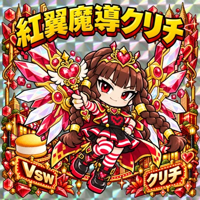
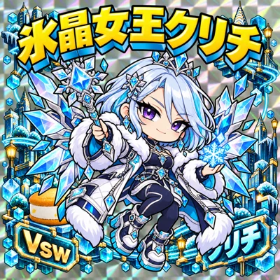
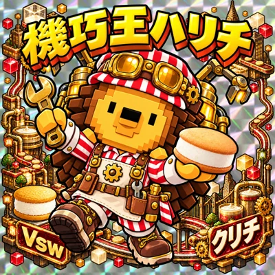
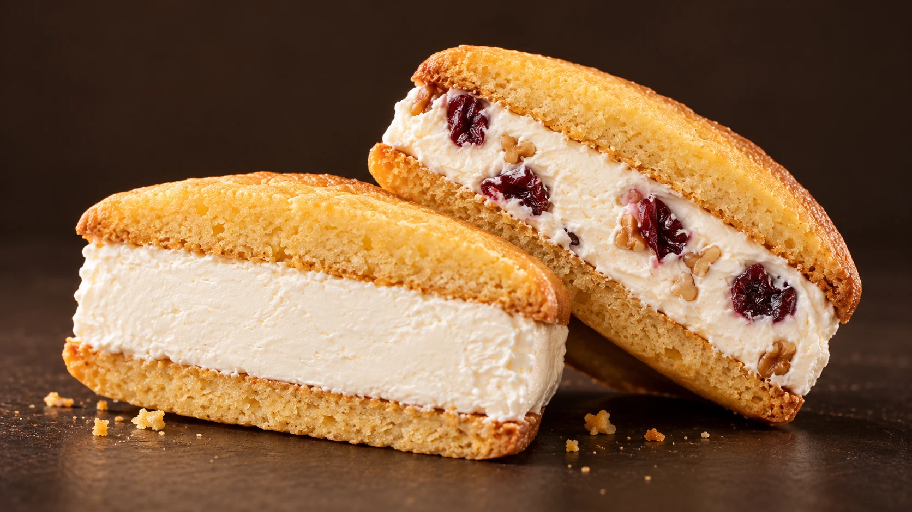
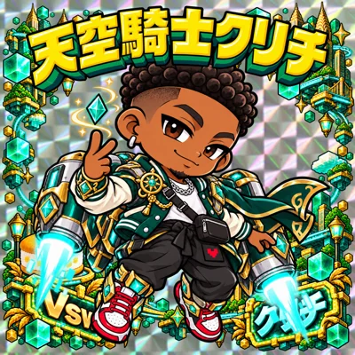
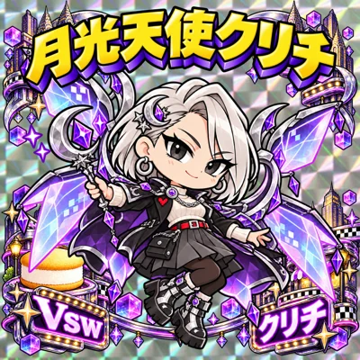
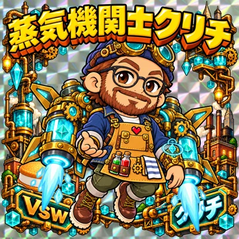
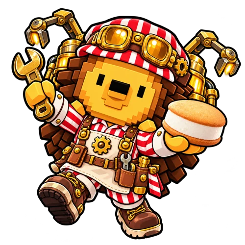
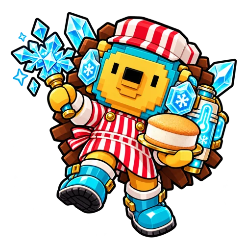
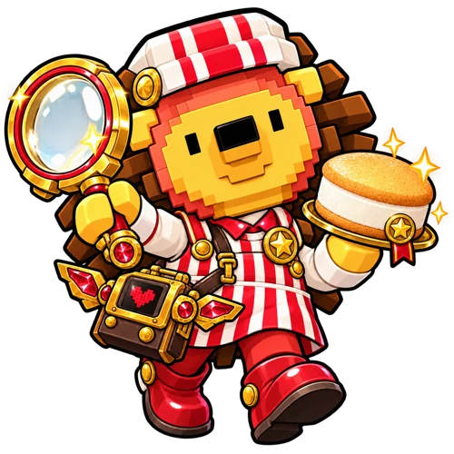

✳ GOT #KURICHI?
シール入りクリチ、登場！
おいしい出会いを、
集めよう。
ひんやりクリチに、キラキラシール。
おいしく食べて、楽しく集めよう。
シール全20種を見る ↗



全
20
種！WHOOPIE #KURICHISCROLL TO EXPLORE ↓
ONE SWEET BITE ✳ ONE NEW ADVENTURE ✳ ONE SWEET BITE ✳ ONE NEW ADVENTURE ✳

LOVE
AT FIRST
BITE! ♥01 / WHAT IS KURICHI?
ひとくちで、
しあわせ。
冷たく楽しむ、
新感覚のクリームチーズスイーツ。
特製クッキーで、濃厚なクリームチーズをたっぷりサンド。おいしい時間に、ワクワクする出会いも添えて。クリチと一緒に、シールの世界を楽しもう。
クリチのことをもっと知る ↗02 / ENTER THE WORLD
扉のむこうは、
クリチの世界。
マンハッタンのVswに、異世界への扉が開く。
その先で待っているのは、個性豊かなクリチたち。
かっこよくて、ちょっと不思議な冒険がはじまる！
仲間たちに会いにいく ↓


MEET THE
CHARACTERS!03 / STICKER COLLECTION
キラリ、出会える。
全20種の仲間たち。
光にきらめく、ホログラムシール。
タップして、それぞれの物語を
のぞいてみよう。
表も裏も楽しめる！
20種類を表示
MEET THE HARICHI!
おいしさをつくる、
ハリチたち。
クリチをつくる工場では、ハリネズミのハリチたちが大活躍。ものづくりが大好きな、たのもしい仲間です。
ハリチのシールを見る ↗HELLO!
WE ARE
HARICHI!

